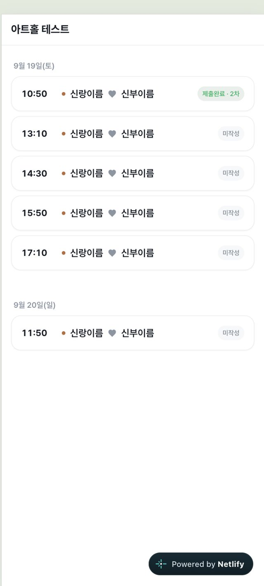
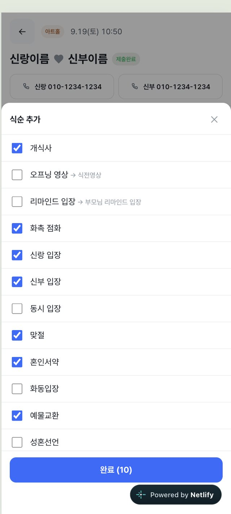
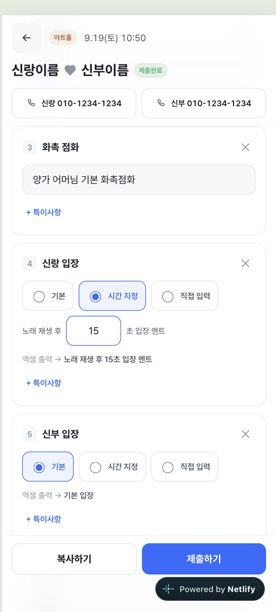
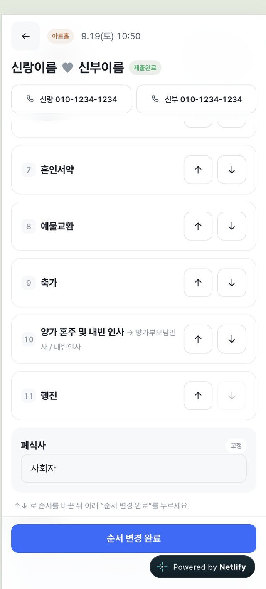
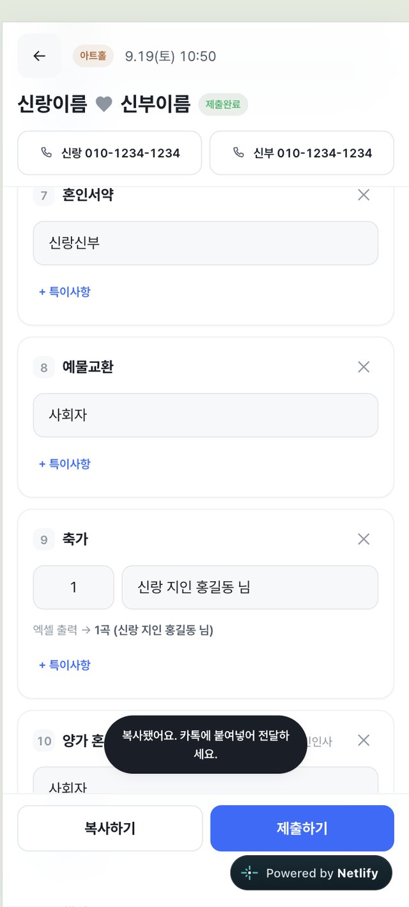
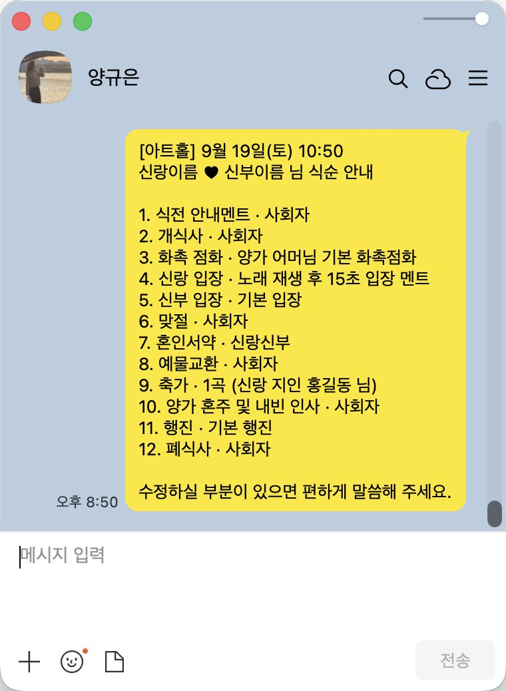

04
사회자 화면
카톡으로 받은 링크를 폰에서 연다. 데스크톱을 쓰지 않고 홀 선택부터 제출까지 끝난다.
핵심은 두 가지다. 첫째, 기본 화면에는 ‘식순 추가’ 버튼 하나만 둔다. 예식마다 식순이 다르니 빈 상태에서 필요한 것만 고르게 했다. 둘째, 반복되는 값은 미리 채워둔다. 개식사는 늘 ‘사회자’, 혼인서약은 늘 ‘신랑신부’다. 사회자는 다른 부분만 고치면 된다.

미작성·작성중·제출완료 구분

본문은 ‘식순 추가’ 버튼 하나

다중 선택 후 한 번에 추가

문장을 실시간으로 보여줌

하단은 ‘완료’ 하나로

클립보드에

입력 방식을 항목마다 다르게
신랑 입장은
기본 입장과 노래 재생 후 00초 입장 멘트 중 하나를 고른다.
축가는 곡 수와 관계·이름을 따로 받아 1곡 (신랑 지인 000 님)으로 조립한다.
모두 자유 입력으로 두면 사람마다 표기가 달라지고, 결국 회사가 다시 정리하게 된다.
입력 단계에서 형식을 정해두면 정리 단계가 사라진다.